| No | Keterangan Data Input | Nama Variabel R | Nama File XLSX |
|---|---|---|---|
| 1 | Tabel Input-Output PADAGIMO tahun 2024 | IO PADAGIMO |
io |
| 2 | Data deskripsi sektor yang berisi: • Nama pendek sektor • Nama singkat sektor • Kategori KSM • Label constrained sector • Label unconstrained sector • Rataan pertumbuhan PDRB ADHK (yoy) setiap sector unconstrained • Jumlah tenaga kerja setiap sektor di tahun 2024 |
DeskripsiSektor |
DeskripsiSektor |
| 3 | Data Land Distribution Coefficient BAU | LDM |
LDM |
| 4 | Data luasan lahan (dalam hektare) berdasarkan tipe land cover historis dan proyeksi menggunakan asumsi skenario BAU | BAU_Lahan |
BAU_Lahan |
| 5 | Data luasan lahan (dalam hektare) berdasarkan tipe land cover historis dan proyeksi menggunakan asumsi skenario IMLaS | LAS_Lahan |
LAS_Lahan |
| 6 | Skenario tipe 1 menggunakan asumsi perubahan lahan yang disimbolkan menjadi LDC | SType1 |
SType1 |
| 7 | Skenario tipe 2 menggunakan beberapa asums: •perubahan produktivitas •perubahan harga •manfaat tambahan •resiko (?) |
SType2 |
SType2 |
| 8 | Skenario tipe 3 menggunakan asumsi perubahan komposisi input-output sektor (hilirisasi dan perubahan investasi) | SType3 |
SType3 |
| 9 | Data jumlah populasi PADAGIMO tahun 2024 dan proyeksi tahun 2025 hingga 2045 | populasiPenduduk |
populasiPenduduk |
| 10 | Data jumlah populasi wilayah pesisir PADAGIMO tahun 2024 dan proyeksi tahun 2025 hingga 2045 | populasiPendudukPesisir |
populasiPesisir |
RegEco - PADAGIMO - Sulteng
Regional Economy Simulation
Untuk mengestimasi dampak ekonomi dari skenario perubahan tutupan lahan spasial terhadap PDRB regional, penelitian ini menerapkan pendekatan Land-Extended Input-Output (LEIO) yang dikombinasikan dengan Mixed Endogenous-Exogenous Input-Output Model (Miller & Blair, 2009). Kerangka kerja hubungan antara koefisien penggunaan lahan fisik dan transaksi moneter mengacu pada metode Land Requirement Coefficient yang dikembangkan oleh Hubacek & Sun (2001) dan Hubacek & Vazquez (2002).
Mengingat output sektor berbasis lahan dibatasi secara fisik oleh kapasitas tutupan lahannya, perubahan output sektor tersebut (ditransformasikan dari perkalian perubahan luas lahan dengan produktivitas lahan . Untuk menghindari estimasi ganda (overestimation) pada matriks Kebalikan Leontief, status output sektor lahan dijajarkan secara eksogen mengikuti formulasi Mixed I-O (Papadas & Dahl, 1999; Miller & Blair, 2009), sedangkan estimasi PDRB sektor non-lahan dihitung secara terintegrasi.
Data Input and Reading
Terdapat 10 file data input berformat xlsx yang digunakan, yaitu:
Linkages analysis
Analisis keterkaitan sektor digunakan untuk mengetahui seberapa kuat interaksi antarsektor dalam suatu wilayah melalui hubungan input yang dibutuhkan dan output yang dihasilkan. Keterkaitan antarsektor dapat dilihat dari dua arah, yaitu keterkaitan ke belakang (backward linkage) dan keterkaitan ke depan (forward linkage). Semakin tinggi nilai backward linkage, semakin besar ketergantungan suatu sektor terhadap input yang berasal dari sektor-sektor lainnya. Sementara itu, semakin tinggi nilai forward linkage, semakin besar peran output suatu sektor sebagai input bagi sektor-sektor lainnya.
Klasifikasi sektor dalam diagram dilakukan berdasarkan Indeks Daya Penyebaran (backward linkage) dan Indeks Derajat Kepekaan (forward linkage), dengan nilai 1,00 sebagai threshold yang merepresentasikan rata-rata keterkaitan antarsektor. Dengan demikian, sektor dengan nilai indeks lebih dari 1 menunjukkan keterkaitan yang berada di atas rata-rata, sedangkan nilai kurang dari 1 menunjukkan keterkaitan yang berada di bawah rata-rata.
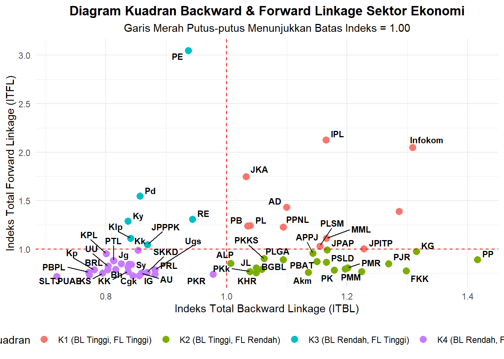
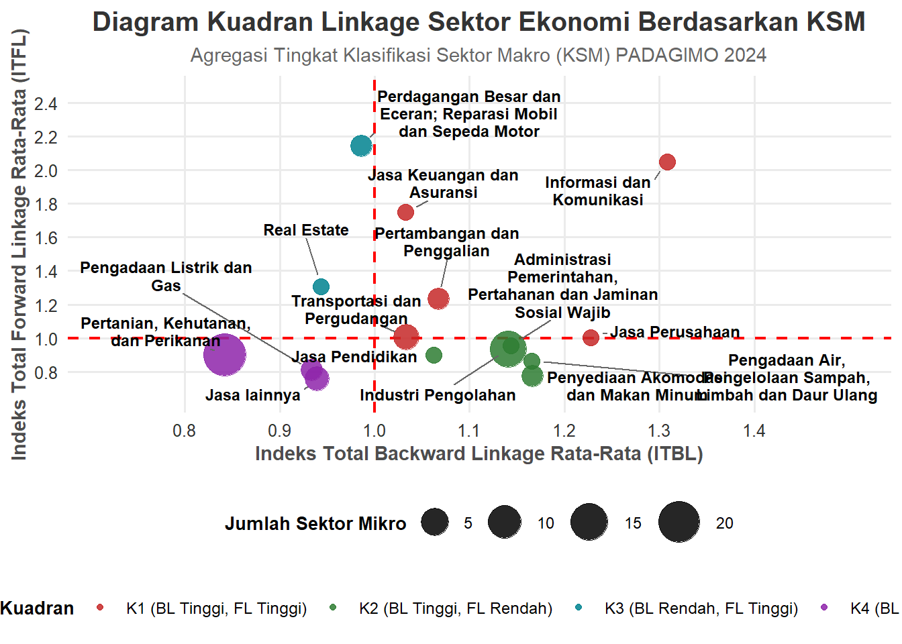
| Sektor Makro (KSM) | Jml Sektor | Rerata ITBL | Rerata ITFL | Kuadran | Klasifikasi Peran |
|---|---|---|---|---|---|
| Administrasi Pemerintahan, Pertahanan dan Jaminan Sosial Wajib | 1 | 1.1433 | 0.9550 | K2 (BL Tinggi, FL Rendah) | Sektor Pendorong Hulu (Backward-Oriented) |
| Industri Pengolahan | 14 | 1.1410 | 0.9367 | K2 (BL Tinggi, FL Rendah) | Sektor Pendorong Hulu (Backward-Oriented) |
| Informasi dan Komunikasi | 1 | 1.3084 | 2.0488 | K1 (BL Tinggi, FL Tinggi) | Sektor Kunci (Key Sector) |
| Jasa Keuangan dan Asuransi | 1 | 1.0323 | 1.7486 | K1 (BL Tinggi, FL Tinggi) | Sektor Kunci (Key Sector) |
| Jasa Pendidikan | 1 | 1.0623 | 0.9009 | K2 (BL Tinggi, FL Rendah) | Sektor Pendorong Hulu (Backward-Oriented) |
| Jasa Perusahaan | 1 | 1.2277 | 1.0043 | K1 (BL Tinggi, FL Tinggi) | Sektor Kunci (Key Sector) |
| Jasa lainnya | 3 | 0.9390 | 0.7602 | K4 (BL Rendah, FL Rendah) | Sektor Terisolasi / Lemah (Weak Sector) |
| Pengadaan Air, Pengelolaan Sampah, Limbah dan Daur Ulang | 1 | 1.1654 | 0.8648 | K2 (BL Tinggi, FL Rendah) | Sektor Pendorong Hulu (Backward-Oriented) |
| Pengadaan Listrik dan Gas | 2 | 0.9332 | 0.8120 | K4 (BL Rendah, FL Rendah) | Sektor Terisolasi / Lemah (Weak Sector) |
| Penyediaan Akomodasi dan Makan Minum | 2 | 1.1662 | 0.7767 | K2 (BL Tinggi, FL Rendah) | Sektor Pendorong Hulu (Backward-Oriented) |
| Perdagangan Besar dan Eceran; Reparasi Mobil dan Sepeda Motor | 2 | 0.9858 | 2.1444 | K3 (BL Rendah, FL Tinggi) | Sektor Pendukung Hilir (Forward-Oriented) |
| Pertambangan dan Penggalian | 2 | 1.0670 | 1.2346 | K1 (BL Tinggi, FL Tinggi) | Sektor Kunci (Key Sector) |
| Pertanian, Kehutanan, dan Perikanan | 23 | 0.8426 | 0.8981 | K4 (BL Rendah, FL Rendah) | Sektor Terisolasi / Lemah (Weak Sector) |
| Real Estate | 1 | 0.9434 | 1.3074 | K3 (BL Rendah, FL Tinggi) | Sektor Pendukung Hilir (Forward-Oriented) |
| Transportasi dan Pergudangan | 4 | 1.0331 | 1.0069 | K1 (BL Tinggi, FL Tinggi) | Sektor Kunci (Key Sector) |
Multiplier Analysis
Analisis multiplier digunakan untuk mengetahui besarnya dampak ekonomi yang ditimbulkan oleh perubahan permintaan akhir pada suatu sektor terhadap perekonomian secara keseluruhan. Dampak ekonomi yang dianalisis meliputi output, tenaga kerja, pendapatan, dan kebutuhan impor.
Output multiplier menunjukkan besarnya perubahan total output seluruh sektor yang ditimbulkan oleh adanya perubahan permintaan akhir pada suatu sektor. Hasil analisis output multiplier di wilayah PADAGIMO tahun 2024 menunjukkan bahwa sektor penggilingan padi memiliki nilai output multiplier tertinggi, diikuti oleh sektor Kayu gergajian dan informasi & komunikasi. Sektor penggilingan padi memiliki nilai output multiplier sebesar 1.9705. Artinya, setiap peningkatan permintaan akhir sebesar Rp1 juta pada sektor tersebut akan mendorong peningkatan output perekonomian secara keseluruhan sebesar sekitar Rp 1,97 juta melalui keterkaitan antarsektor.
Dari 15 sektor dengan nilai output multiplier tertinggi, belum terdapat sektor berbasis lahan yang masuk dalam kelompok tersebut. Hal ini menunjukkan bahwa, berdasarkan struktur keterkaitan input-output PADAGIMO tahun 2024, sektor berbasis lahan belum menjadi sektor yang memiliki efek pengganda output paling besar dibandingkan sektor-sektor lainnya.

Analisis Labour effect menunjukkan besarnya tambahan tenaga kerja yang terserap sebagai dampak dari peningkatan permintaan akhir pada suatu sektor, baik secara langsung maupun tidak langsung melalui keterkaitan antarsektor. Nilai labour effect dinyatakan dalam jumlah tenaga kerja yang terserap untuk setiap peningkatan permintaan akhir sebesar Rp1 juta.
Hasil analisis labour effect di wilayah PADAGIMO tahun 2024 menunjukkan bahwa sektor Perikanan tangkap memiliki labour effect tertinggi (0,4594), diikuti oleh sektor perikanan budidaya payau/laut (0.2937). Nilai labour effect sektor perikanan tangkap sebesar 0,4594 bermakna bahwa setiap peningkatan permintaan akhir sebesar Rp1 juta pada sektor tersebut berpotensi meningkatkan penyerapan tenaga kerja sekitar 0,4594 orang, atau setara dengan sekitar 46 orang untuk setiap peningkatan permintaan akhir sebanyak Rp1 miliar.
Berbeda dengan hasil output multiplier, sektor berbasis lahan cukup dominan dalam labour effect. Dari 15 sektor dengan nilai labour effect tertinggi, sebagian besar merupakan sektor berbasis lahan antara lain sektor produk peternakan lainnya, budidaya rumput laut, kopi, perikanan budidaya air tawar, unggas, dan sayuran. Hal ini menunjukkan bahwa sektor berbasis lahan di PADAGIMO memiliki peran yang relatif besar dalam penyerapan tenaga kerja.
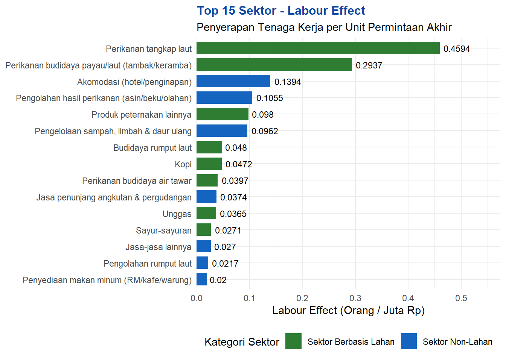
Analisis income effect (efek pendapatan) digunakan untuk mengetahui besarnya dampak peningkatan permintaan akhir suatu sektor terhadap pendapatan rumah tangga yang dihasilkan dalam perekonomian. Hasil analisis income effect di wilayah PADAGIMO tahun 2024 menunjukkan bahwa sektor administrasi pemerintah, pertahanan & jaminan sosial wajib memiliki nilai income effect tertinggi, yaitu sebesar 0,6683, diikuti oleh budidaya rumput laut (0,5757). Artinya, setiap peningkatan permintaan akhir sebesar Rp1 juta pada sektor administrasi pemerintah, pertahanan & jaminan sosial wajib akan mendorong peningkatan pendapatan rumah tangga sekitar Rp 668 ribu melalui aktivitas ekonomi yang tercipta dalam perekonomian.
Dari 15 sektor dengan nilai income effect tertinggi, terdapat beberapa sektor berbasis lahan yaitu budaiya rumput laut, kakao, unggas, umbi-umbian, sapi/kerbau dan kambing/domba, padi, rotan dan HHBK lainnya. Hal ini menunjukkan bahwa berdasarkan struktur perekonomian PADAGIMO tahun 2024, sektor berbasis lahan di PADAGIMO memiliki peran yang relatif besar dalam menghasilkan pendapatan rumah tangga.
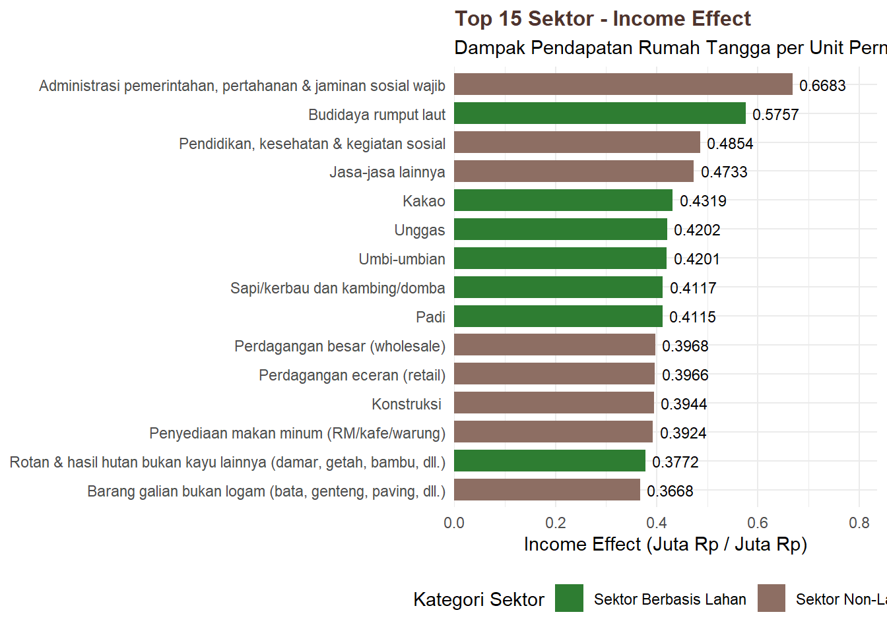
Analisis import effect (efek kebocoran impor) digunakan untuk mengetahui besarnya kebutuhan input impor yang timbul akibat peningkatan permintaan akhir pada suatu sektor. Indikator ini menunjukkan seberapa besar bagian dari tambahan permintaan akhir yang harus dipenuhi melalui input dari luar wilayah, sehingga semakin tinggi nilai import effect, semakin besar pula potensi kebocoran ekonomi melalui impor.
Hasil analisis import effect di wilayah PADAGIMO tahun 2024 menunjukkan bahwa sektor pengolahan kakao memiliki nilai import effect tertinggi, yaitu sebesar 0,6392, diikuti oleh pengadaan listrik, gas & air bersih (0,4975), serta pengolahan dan kerajinan rotan (0,3618). Untuk sektor pengolahan kakao yang tertinggi memiliki arti, setiap peningkatan permintaan akhir sebesar Rp1 juta pada sektor pengolahan kakao akan memunculkan kebutuhan input impor sekitar Rp639 ribu. Dengan demikian, relatif tingginya nilai import effect pada sektor tersebut menunjukkan bahwa aktivitas produksinya masih memiliki ketergantungan yang cukup besar terhadap input yang berasal dari luar wilayah PADAGIMO.
Dari 15 sektor dengan nilai import effect tertinggi, tidak terdapat sektor berbasis lahan. Hal ini menunjukkan bahwa sektor berbasis lahan di PADAGIMO relatif memiliki kebutuhan input impor yang lebih rendah dibandingkan sektor-sektor lainnya. Kondisi tersebut dapat menjadi indikasi bahwa pengembangan sektor berbasis lahan berpotensi menghasilkan kebocoran impor yang relatif lebih kecil.
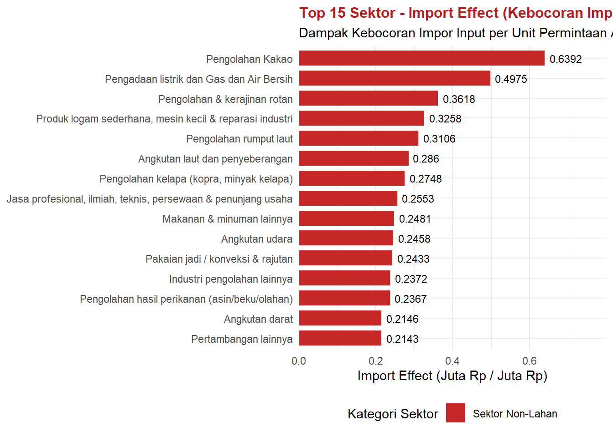
Simulation BAU
Definisi
Skenario ini merupakan proyeksi kondisi ekonomi dan lingkungan yang berjalan tanpa adanya intervensi kebijakan baru atau perubahan signifikan dalam tata kelola sumber daya hingga tahun 2045.
Asumsi
Proyeksi perubahan penggunaan lahan dimodelkan dengan mengacu pada data historis tahun 2019 sampai tahun 2024. Pertumbuhan ekonomi sektor non-LaS diproyeksikan dengan rerata pertumbuhan ekonomi 10 tahun terakhir
Simulation LAS-1
Definisi
Skenario ini menerapkan prinsip integrasi pengelolaan ruang darat laut yang tertuang pada Strategi-1 melalui Alokasi dan pengelolaan ruang darat-laut dan DAS berkelanjutan.
Asumsi
Proyeksi perubahan penggunaan lahan dan pemanfaatan ruang perairan memasukkan unsur perlindungan ekosistem penting, kesesuaian lahan, akses lahan dengan skema perhutanan sosial dan tata ruang. Proyeksi pertumbuhan ekonomi sektor lahan dihitung berdasarkan Koefisien Kebutuhan Lahan 2025-2045 dan tabel Input-Output
Simulation LAS-1+2
Definisi
Pengembangan dari IMLaS-1 dengan memasukkan peningkatan produktivitas komoditas strategi seperti padi, jagung, kacang-kacangan, umbi-umbian, sayuran, buah-buahan, kelapa, kakao, kopi, cengkeh, unggas, produk peternakan lainnya dan budidaya ikan pada Strategi-2 yang dicapai melalui praktik pertanian dan perikanan yang baik.
Asumsi
Seluruh asumsi pada IMLaS-1, dipadukan dengan peningkatan produktivitas melalui penerapan praktik budidaya yang baik, dan perbaikan harga melalui rantai pasok serta pemasaran yang diperkuat. Pada akhir periode simulasi, diasumsikan lebih dari 85% area sektor komoditas strategis sudah menerapkan praktik budidaya dan rantai nilai yang baik
Simulation LAS-1+2+3
Definisi
Pengembangan dari IMLaS-2 dengan menambahkan penguatan rantai nilai komoditas strategis pada Strategi-2 melalui hilirisasi produk dan peningkatan investasi.
Asumsi
Seluruh asumsi pada IMLaS2, dipadukan dengan upaya mengurangi ekspor bahan mentah, yang kemudian dialihkan pada proses hilirisasi melalui pengembangan industri hilir dan dan Investasi strategis secara bertahap
PDRB
Pendapatan domestik regional bruto merupakan salah satu indikator kinerja perekonomian suatu wilayah. Proyeksi terhadap PDRB digunakan untuk mengetahui gambaran mengenai arah pertumbuhan ekonomi di suatu wilayah yang didasarkan pada dua skenario utama yakni BaU serta skenario intervensi IMLaS. Skenario BaU didasarkan pada asumsi bahwa kondisi ekonomi dan lingkungan yang berjalan tanpa adanya intervensi kebijakan baru atau perubahan signifikan dalam tata kelola sumber daya hingga tahun 2045. Skenario IMLaS-3 didasarkan pada asumsi bahwa terjadi perubahan penggunaan ruang darat laut melalui kebijakan pengelolaan yang terintegrasi serta usaha peningkatan produktivitas komoditas strategis dibarengi dengan hilirisasi dan peningkatan investasi. Komoditas strategis yang dilakukan intervensi pada IMLaS diantaranya adalah padi, jagun, umbi-umbian, sayuran, buah-buahan, tanaman pangan, kopi, kakao, kelapa, kelapa sawit, peternakan, dan perikanan yang tertuang pada Strategi-2.
Hasil proyeksi menunjukkan bahwa pada akhir periode simulasi tahun 2045, penerapan skenario IMLaS mampu menghasilkan PDRB sebanyak XXX triliun rupiah. Angka tersebut 5,2% lebih besar ketimbang hasil proyeksi PDRB menggunakan skenario BaU yakni 542,2 triliun rupiah. Penerapan intervensi skenario IMLaS menunjukkan bahwa rerata laju pertumbuhan ekonomi keseluruhan sektor diproyeksikan sebesar 4,02% (lebih besar ketimbang skenario BAU sebesar 3,76%). Hal ini didorong oleh pertumbuhan sektor SDA dengan perubahan rerata laju pertumbuhan dari 2% (Skenario BaU) menjadi 4% (Skenario IMLaS).
| Year | BAU | IMLaS 1 | IMLaS 1B | IMLaS 2 | IMLaS 3 |
|---|---|---|---|---|---|
| 2,024 | 87,298,864 | 87,298,864 | 87,298,864 | 87,298,864 | 87,298,864 |
| 2,025 | 90,551,786 | 90,540,851 | 90,382,197 | 90,382,197 | 90,382,197 |
| 2,026 | 93,936,580 | 93,914,173 | 93,587,474 | 93,587,474 | 93,587,474 |
| 2,027 | 97,459,013 | 97,424,631 | 96,919,854 | 96,919,854 | 96,919,854 |
| 2,028 | 101,125,131 | 101,078,310 | 100,384,739 | 100,384,739 | 100,384,739 |
| 2,029 | 104,941,269 | 104,881,596 | 103,987,782 | 104,017,483 | 105,778,047 |
| 2,030 | 108,551,137 | 108,435,110 | 107,401,199 | 107,507,884 | 109,329,168 |
| 2,031 | 112,290,760 | 112,117,273 | 110,937,730 | 111,162,544 | 113,046,780 |
| 2,032 | 116,164,864 | 115,932,868 | 114,601,911 | 114,991,089 | 116,940,599 |
| 2,033 | 120,178,350 | 119,886,859 | 118,398,448 | 119,003,793 | 121,020,991 |
| 2,034 | 124,336,299 | 123,984,402 | 122,332,225 | 123,269,193 | 127,454,737 |
| 2,035 | 128,391,318 | 127,972,248 | 126,220,030 | 127,512,167 | 133,228,879 |
| 2,036 | 132,584,712 | 132,096,057 | 130,241,475 | 131,956,578 | 139,310,204 |
| 2,037 | 136,921,255 | 136,360,531 | 134,401,195 | 136,612,267 | 145,714,532 |
| 2,038 | 141,405,892 | 140,770,536 | 138,703,990 | 141,489,591 | 152,458,508 |
| 2,039 | 146,043,738 | 145,331,107 | 143,154,826 | 146,654,716 | 159,615,846 |
| 2,040 | 150,567,129 | 149,768,042 | 147,550,231 | 151,753,214 | 166,831,303 |
| 2,041 | 155,242,807 | 154,353,714 | 152,093,919 | 157,078,317 | 174,410,326 |
| 2,042 | 160,075,995 | 159,093,238 | 156,790,995 | 162,638,792 | 182,369,117 |
| 2,043 | 165,072,099 | 163,991,906 | 161,646,745 | 168,443,739 | 190,724,572 |
| 2,044 | 170,236,710 | 169,055,196 | 166,666,636 | 174,502,597 | 199,494,312 |
| 2,045 | 175,575,616 | 174,288,774 | 171,856,326 | 180,927,604 | 208,802,240 |
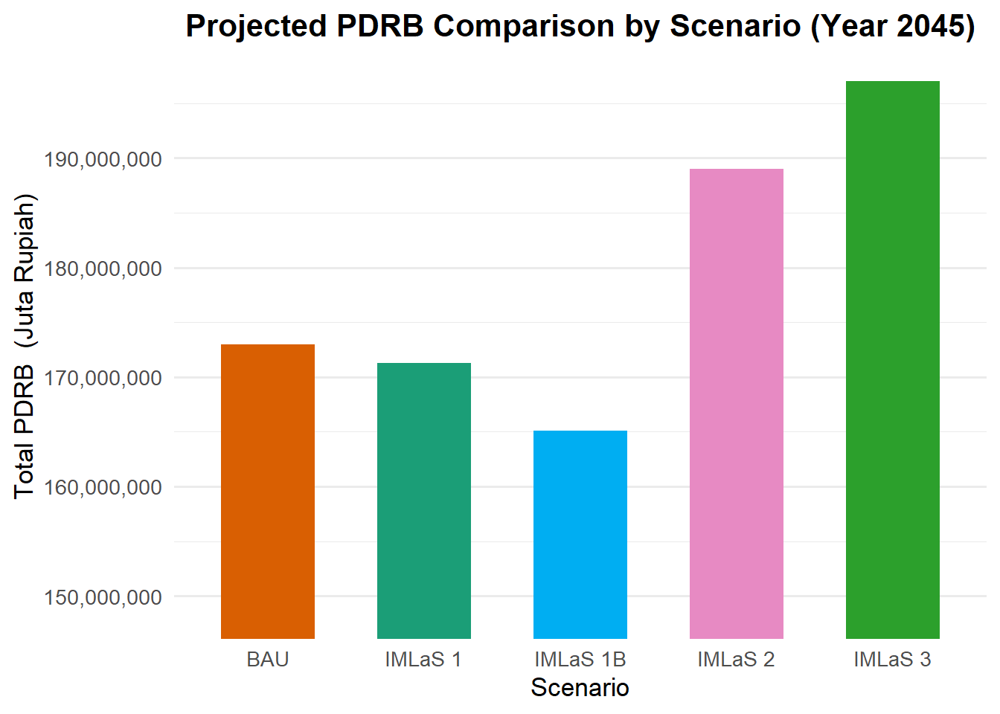
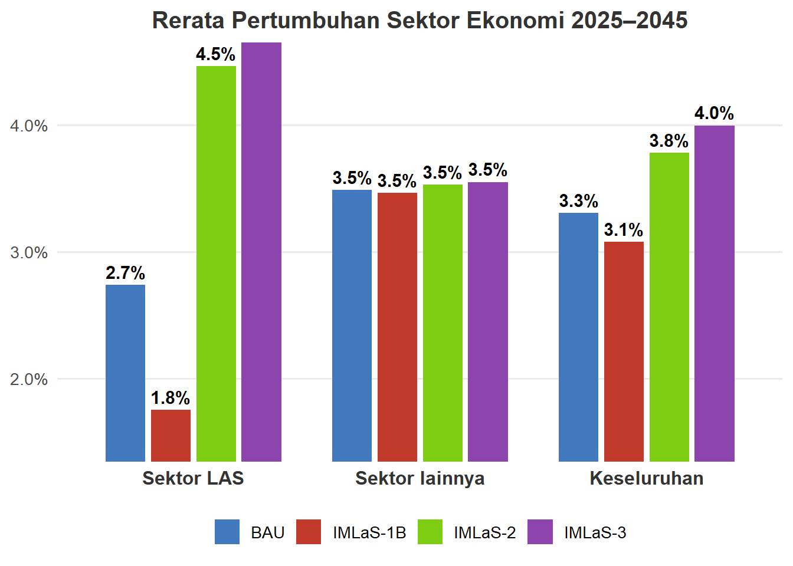
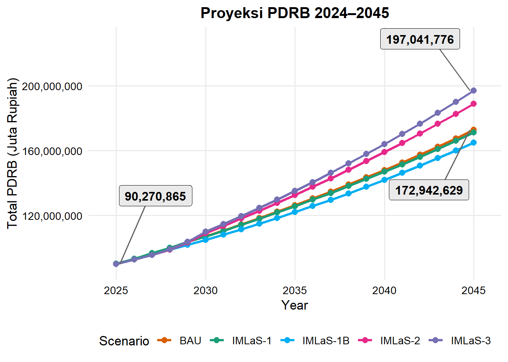
| Parameter Indikator | Nilai Simulasi |
|---|---|
| PDRB BAU 2045 | Rp 175,575,616 Juta |
| PDRB IMLaS-3 (LAS1+2+3) 2045 | Rp 208,802,240 Juta |
| Selisih Tambahan PDRB (Juta Rp) | Rp 33,226,624 Juta |
| Persentase Kenaikan dibanding BAU (%) | +18.92% |
| Rerata Laju Pertumbuhan BAU (2024–2045) | 3.38% per tahun |
| Rerata Laju Pertumbuhan IMLaS-3 (2024–2045) | 4.24% per tahun |
Pendapatan Per Kapita
Proyeksi pendapatan masyarakat di wilayah PADAGIMO didapat berdasarkan pendekatan koefisien kompensasi tenaga kerja (proporsi upah dan gaji terhadap PDRB) yang dihubungkan secara langsung dengan total PDRB proyeksi tahunan. Selanjutnya, proyeksi pendapatan tersebut dibagi dengan total penduduk PADAGIMO untuk memperoleh proyeksi pendapatan per kapita masyarakat.
Sejalan dengan pertumbuhan PDRB regional, penerapan berbagai tingkat skenario IMLaS terbukti mampu memberikan dorongan signifikan terhadap peningkatan pendapatan per kapita di wilayah studi dibandingkan kondisi Business As Usual (BAU).
Intervensi skenario IMLaS-3 diproyeksikan mampu meningkatkan rerata laju pertumbuhan pendapatan per kapita PADAGIMO menjadi 3,2%. Penerapan skenario penuh IMLaS-3 ditahun terakhir simulasi menghasilkan selisih kenaikan pendapatan masyarakat keseluruhan PADAGIMO sebesar Rp 39,49 juta per kapita, lebih tinggi dibandingkan skenario BAU pada tahun 2045 (peningkatan sekitar 5,23%).
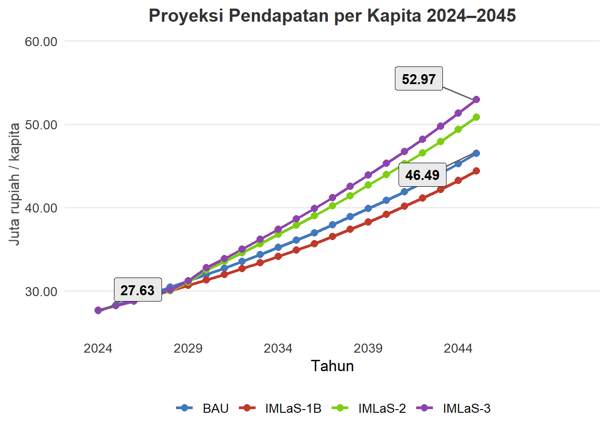
| Parameter Indikator | Nilai Simulasi |
|---|---|
| Income per Kapita BAU 2045 | Rp 47.20 Juta |
| Income per Kapita IMLaS-3 (LAS1+2+3) 2045 | Rp 56.13 Juta |
| Selisih Tambahan Income (Juta Rp) | Rp 8.93 Juta |
| Persentase Kenaikan dibanding BAU (%) | +18.92% |
| Rerata Laju Pertumbuhan BAU (2024–2045) | 2.58% |
| Rerata Laju Pertumbuhan IMLaS-3 (2024–2045) | 3.43% |
Pendapatan Masyarakat Pesisir per Kapita
Proyeksi pendapatan per kapita masyarakat pesisir dihitung dengan membagi proyeksi pendapatan masyarakat pesisir PADAGIMO dengan proyeksi populasi masyarakat pesisir. Kedua proyeksi tersebut diestimasi berdasarkan proporsi luas wilayah pesisir terhadap total wilayah PADAGIMO, yang dikaitkan dengan proyeksi pendapatan masyarakat dan populasi PADAGIMO secara keseluruhan. Pendekatan ini digunakan untuk menggambarkan sejauh mana dampak intervensi terhadap perekonomian regional tercermin pada tingkat kesejahteraan masyarakat pesisir.
Tanpa adanya intervensi pengelolaan berbasis lahan dan pasar yang inklusif, pendapatan per kapita masyarakat pesisir diproyeksikan tumbuh secara alamiah hingga mencapai Rp 44,4 juta pada tahun 2045. Pelaksanaan skenario intervensi secara konsisten menunjukkan deviasi positif di atas kurva BAU. Skenario IMLaS-1 serta IMLaS-2 secara bertahap menaikkan taraf pendapatan kawasan pesisir.
Puncak potensi dicapai pada Skenario IMLaS-3 yang merupakan kombinasi optimal tata guna lahan, produktivitas, dan hilirisasi rantai nilai berbasis lahan/pesisir), di mana pendapatan per kapita masyarakat pesisir diproyeksikan meningkat hingga Rp 46,7 juta pada tahun 2045. Penerapan skenario penuh IMLaS-3 menghasilkan tambahan pendapatan bagi masyarakat pesisir sebesar Rp 2,3 juta lebih tinggi dibandingkan skenario BaU pada tahun 2045. Angka ini mencerminkan peningkatan sebesar 5,18% pada pendapatan per kapita masyarakat pesisir jika dibandingkan dengan kondisi tanpa intervensi.
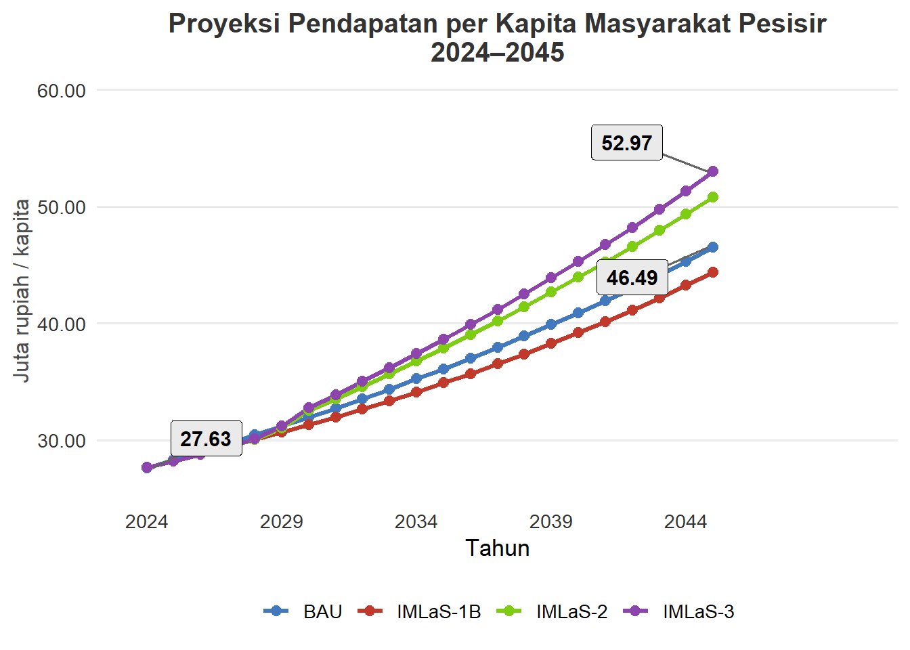
| Parameter Indikator Pesisir | Nilai Simulasi |
|---|---|
| Income per Kapita Pesisir BAU 2045 | Rp 47.20 Juta |
| Income per Kapita Pesisir IMLaS-3 (LAS1+2+3) 2045 | Rp 56.13 Juta |
| Selisih Tambahan Income Pesisir (Juta Rp) | Rp 8.93 Juta |
| Persentase Kenaikan dibanding BAU (%) | +18.92% |
| Rerata Laju Pertumbuhan BAU Pesisir (2024–2045) | 2.58% per tahun |
| Rerata Laju Pertumbuhan IMLaS-3 Pesisir (2024–2045) | 3.43% per tahun |
Total Keuntungan Usaha
Proyeksi total keuntungan usaha regional dihitung berdasarkan proporsi Surplus Usaha Bruto (Gross Operating Surplus) terhadap total PDRB, yang kemudian diselaraskan dengan proyeksi PDRB. Indikator ini mencerminkan porsi nilai tambah ekonomi yang diperoleh para pelaku usaha dan pemilik modal atas investasi serta aktivitas bisnis di wilayah PADAGIMO.
Tanpa adanya intervensi kebijakan perekonomian regional, keuntungan usaha diproyeksikan tumbuh secara alamiah hingga mencapai Rp 291,38 triliun pada tahun 2045. Sedangkan dengan adanya penerapan skenario IMLAS menghasilkan capaian tertinggi nilai proyeksi keuntungan usaha mencapai Rp306,63 triliun pada akhir periode simulasi tahun 2045. Menerapkan skenario IMLaS-3 berpotensi memberikan tambahan keuntungan usaha sebesar Rp 15,25 triliun lebih tinggi dibandingkan skenario BAU pada tahun 2045.
Pendapatan keuntungan usaha menggambarkan manfaat ekonomi yang diterima oleh pelaku usaha sebagai hasil dari perkembangan aktivitas ekonomi di suatu wilayah. Grafik di bawah menunjukkan bahwa di akhir periode tahun 2045, potensi keuntungan usaha regional dapat ditingkatkan menjadi 5,2% lebih besar dengan menerapkan skenario IMLaS-3 dibanding skenario BaU. Melalui penerapan intervensi IMLaS-3, keuntungan usaha regional di PADAGIMO secara rata-rata diproyeksikan 4,5% lebih tinggi dibandingkan jika wilayah berjalan dengan skenario BAU.
| Year | BAU | LAS 1 | LAS 1B | LAS 12 | LAS 123 |
|---|---|---|---|---|---|
| 2,024 | 47,218,259 | 47,218,259 | 47,218,259 | 47,218,259 | 47,218,259 |
| 2,025 | 48,977,701 | 48,971,787 | 48,885,974 | 48,885,974 | 48,885,974 |
| 2,026 | 50,808,470 | 50,796,351 | 50,619,646 | 50,619,646 | 50,619,646 |
| 2,027 | 52,713,686 | 52,695,090 | 52,422,066 | 52,422,066 | 52,422,066 |
| 2,028 | 54,696,618 | 54,671,293 | 54,296,154 | 54,296,154 | 54,296,154 |
| 2,029 | 56,760,693 | 56,728,417 | 56,244,970 | 56,261,035 | 57,213,290 |
| 2,030 | 58,713,200 | 58,650,444 | 58,091,221 | 58,148,925 | 59,134,022 |
| 2,031 | 60,735,890 | 60,642,054 | 60,004,062 | 60,125,660 | 61,144,806 |
| 2,032 | 62,831,317 | 62,705,835 | 61,985,946 | 62,196,445 | 63,250,897 |
| 2,033 | 65,002,134 | 64,844,472 | 64,039,419 | 64,366,839 | 65,457,902 |
| 2,034 | 67,251,088 | 67,060,753 | 66,167,123 | 66,673,911 | 68,937,790 |
| 2,035 | 69,444,369 | 69,217,702 | 68,269,961 | 68,968,853 | 72,060,911 |
| 2,036 | 71,712,494 | 71,448,190 | 70,445,083 | 71,372,748 | 75,350,182 |
| 2,037 | 74,058,046 | 73,754,761 | 72,694,994 | 73,890,920 | 78,814,159 |
| 2,038 | 76,483,699 | 76,140,047 | 75,022,293 | 76,528,970 | 82,461,844 |
| 2,039 | 78,992,220 | 78,606,771 | 77,429,663 | 79,322,686 | 86,333,109 |
| 2,040 | 81,438,834 | 81,006,623 | 79,807,053 | 82,080,364 | 90,235,810 |
| 2,041 | 83,967,817 | 83,486,924 | 82,264,645 | 84,960,609 | 94,335,156 |
| 2,042 | 86,581,995 | 86,050,440 | 84,805,202 | 87,968,162 | 98,639,911 |
| 2,043 | 89,284,290 | 88,700,035 | 87,431,583 | 91,107,944 | 103,159,214 |
| 2,044 | 92,077,728 | 91,438,670 | 90,146,744 | 94,385,063 | 107,902,596 |
| 2,045 | 94,965,438 | 94,269,411 | 92,953,747 | 97,860,225 | 112,937,074 |
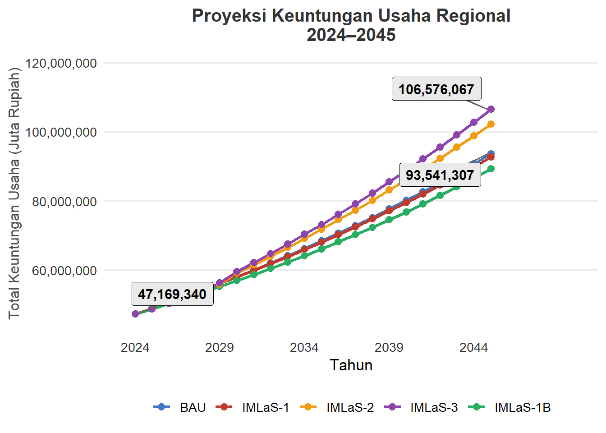
| Parameter Indikator Keuntungan Usaha | Nilai Simulasi |
|---|---|
| Total Keuntungan Usaha BAU 2045 | Rp 175,575,616 Juta |
| Total Keuntungan Usaha IMLaS-3 (LAS1+2+3) 2045 | Rp 208,802,240 Juta |
| Selisih Tambahan Keuntungan Usaha (Juta Rp) | Rp 33,226,624 Juta |
| Persentase Kenaikan dibanding BAU (%) | +18.92% |
| Rerata Laju Pertumbuhan BAU (2024–2045) | 3.20% |
| Rerata Laju Pertumbuhan IMLaS-3 (2024–2045) | 4.06% |
Serapan Tenaga Kerja
Proyeksi serapan tenaga kerja mengasumsikan penambahan serapan tenaga kerja baru tahunan sebagai hasil akumulasi selisih pertumbuhan PDRB yang diselaraskan dengan nilai Labor Multiplier. Intervensi melalui skenario IMLaS diharapkan mampu menyerap lebih banyak tenaga kerja. Hasil proyeksi menunjukkan bahwa Intervensi skenario IMLaS-3 di akhir tahun 2045 diproyeksikan mampu meningkatkan serapan tenaga kerja sebesar 6.016.163 orang. Angka tersebut 5,2% lebih besar bila dibandingkan dengan hasil simulasi penerapan skenario BaU (Bussiness as Usual) yakni 5.719.673 orang.
| Tahun | BAU | LAS 1 | LAS 1B | LAS 12 | LAS 123 |
|---|---|---|---|---|---|
| 2,024 | 767,171 | 767,171 | 767,171 | 767,171 | 767,171 |
| 2,025 | 795,757 | 795,661 | 794,267 | 794,267 | 794,267 |
| 2,026 | 825,502 | 825,305 | 822,434 | 822,434 | 822,434 |
| 2,027 | 856,457 | 856,155 | 851,719 | 851,719 | 851,719 |
| 2,028 | 888,674 | 888,263 | 882,168 | 882,168 | 882,168 |
| 2,029 | 922,210 | 921,686 | 913,831 | 914,092 | 929,564 |
| 2,030 | 953,933 | 952,914 | 943,828 | 944,765 | 960,770 |
| 2,031 | 986,797 | 985,272 | 974,906 | 976,882 | 993,440 |
| 2,032 | 1,020,842 | 1,018,803 | 1,007,107 | 1,010,527 | 1,027,659 |
| 2,033 | 1,056,112 | 1,053,550 | 1,040,470 | 1,045,790 | 1,063,517 |
| 2,034 | 1,092,651 | 1,089,559 | 1,075,040 | 1,083,274 | 1,120,056 |
| 2,035 | 1,128,286 | 1,124,603 | 1,109,205 | 1,120,560 | 1,170,798 |
| 2,036 | 1,165,137 | 1,160,843 | 1,144,545 | 1,159,617 | 1,224,240 |
| 2,037 | 1,203,246 | 1,198,319 | 1,181,100 | 1,200,531 | 1,280,520 |
| 2,038 | 1,242,656 | 1,237,073 | 1,218,913 | 1,243,392 | 1,339,785 |
| 2,039 | 1,283,413 | 1,277,151 | 1,258,026 | 1,288,782 | 1,402,683 |
| 2,040 | 1,323,164 | 1,316,142 | 1,296,652 | 1,333,587 | 1,466,092 |
| 2,041 | 1,364,253 | 1,356,440 | 1,336,581 | 1,380,384 | 1,532,695 |
| 2,042 | 1,406,727 | 1,398,091 | 1,377,859 | 1,429,248 | 1,602,636 |
| 2,043 | 1,450,632 | 1,441,139 | 1,420,530 | 1,480,262 | 1,676,063 |
| 2,044 | 1,496,018 | 1,485,635 | 1,464,645 | 1,533,506 | 1,753,130 |
| 2,045 | 1,542,936 | 1,531,627 | 1,510,251 | 1,589,968 | 1,834,927 |
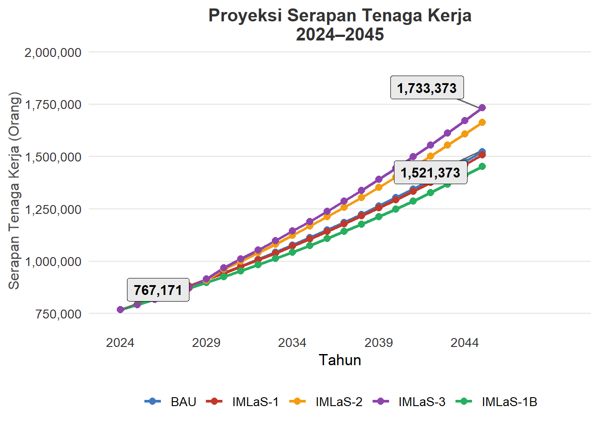
| Parameter Indikator Tenaga Kerja | Nilai Simulasi |
|---|---|
| Serapan Tenaga Kerja BAU 2045 | 175,575,616 Orang |
| Serapan Tenaga Kerja IMLaS-3 (LAS1+2+3) 2045 | 208,802,240 Orang |
| Selisih Tambahan Serapan TK (Orang) | 33,226,624 Orang |
| Persentase Kenaikan dibanding BAU (%) | +18.92% |
| Rerata Laju Pertumbuhan BAU per tahun (2024–2045) | 3.20% |
| Rerata Laju Pertumbuhan IMLaS-3 per tahun (2024–2045) | 4.06% |
Keterkaitan SDA dengan sektor lain
Indeks Total Forward Linkage (ITFL) atau Indeks Derajat Kepekaan mengukur sejauh mana sektor berbasis lahan berfungsi sebagai penyedia input (supplier) bagi pertumbuhan sektor-sektor perekonomian lainnya. Semakin tinggi nilai ITFL, semakin kuat dorongan yang diberikan oleh sektor lahan terhadap rantai pasok hilir (forward linkage) dan sektor olahan di dalam struktur ekonomi regional.
Pada kondisi BAU, rerata nilai ITFL sektor lahan berada pada tingkat yang sangat datar dan stagnan di kisaran 0,18 sepanjang periode 2024 hingga 2045. Hal ini mengindikasikan bahwa tanpa adanya intervensi struktur perekonomian, keterkaitan sektor lahan terhadap sektor hilir tidak mengalami penguatan dan cenderung bertindak sekadar sebagai penyedia bahan baku mentah tanpa integrasi rantai nilai yang memadai. Penerapan skenario IMLAS-3 memperlihatkan peningkatan rerata ITFL yang signifikan dan konsisten membentuk pola naik. Dimulai dari titik awal yang sama pada tahun 2024–2027 (0,18), nilai ITFL meningkat secara bertahap menembus 0,185 pada kisaran tahun 2030, melampaui 0,19 pada periode 2040–2041, hingga mencapai puncaknya mendekati 0,20 pada tahun 2045.
Kenaikan bertahap pada kurva simulasi LAS membuktikan bahwa intervensi kebijakan (penguatan akses lahan, peningkatan produktivitas, serta optimalisasi rantai nilai dan hilirisasi) berhasil mengubah peran sektor lahan dari sekadar sektor primer mentah menjadi mesin penggerak industri olahan lokal. Peningkatan nilai ITFL ini mengonfirmasi bahwa setiap pertumbuhan output pada sektor lahan di bawah skenario IMLAS-3 akan terdistribusi secara lebih luas sebagai input bagi sektor manufaktur, industri pengolahan, perdagangan, dan jasa terkait.
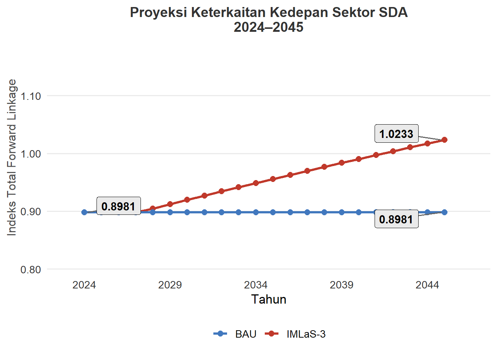